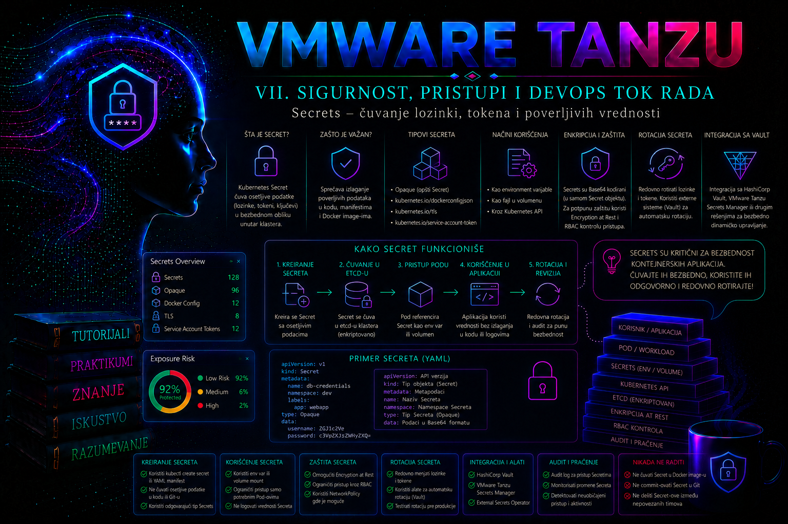

VMware & Tanzu

Prethodna lekcija postavila je višeslojni bezbednosni model od vSphere infrastrukture do aplikacije. Ova lekcija obrađuje jedan od njegovih najosetljivijih tokova: kako se identitet, tajna i kriptografsko poverenje stvaraju, prenose, koriste, rotiraju, opozivaju i dokazuju bez izlaganja poverljivog materijala. Cilj nije samo kreiranje Kubernetes Secret objekta ili TLS sertifikata, već projektovanje celog životnog ciklusa u kojem su izvor istine, vlasnik, rok važenja, zavisni workload-i, audit trag i postupak oporavka unapred poznati.
Uloga Secret objekata u Kubernetes i Tanzu okruženju
Kubernetes Secret je namespace API objekat namenjen manjim količinama poverljivih podataka: lozinkama, API tokenima, privatnim ključevima, registry kredencijalima i TLS materijalu. Njegova osnovna vrednost nije u tome što automatski pretvara Kubernetes u enterprise vault, već u tome što odvaja poverljive vrednosti od container image-a, Deployment manifesta i konfiguracije koja se deli kroz razvojni i operativni proces.
U VKS workload klasteru Secret radi kao standardni upstream Kubernetes objekat. Kreira se u određenom namespace-u, čuva preko API servera i može se dostaviti Pod-u kao fajl u volume-u, kao promenljiva okruženja ili preko specijalizovanih polja kao što je imagePullSecrets. Supervisor i VKS obezbeđuju platformsku kontrolu životnog ciklusa klastera, identiteta i politika, ali zaštita aplikacione tajne i dalje zavisi od RBAC-a, enkripcije podataka u mirovanju, zaštite node-a, auditovanja, načina unosa, ponašanja aplikacije i rotacije.
Base64 nije enkripcija. Polje data koristi Base64 samo da bi binarni sadržaj mogao da se prenese kroz JSON ili YAML. Svako ko može da pročita objekat može da dekodira vrednost. Kubernetes dokumentacija upozorava da su Secrets bez posebno konfigurisane enkripcije u osnovnom skladištu API servera sačuvani nešifrovano. TLS prema API serveru štiti prenos, ali ne i etcd zapis, backup, aplikacioni log ili vrednost koju ovlašćeni korisnik legitimno pročita.
Jedan Secret je ograničen na manje od 1 MiB. Veliki sertifikacioni paketi, rezervne kopije, dokumenti i hiljade dugovečnih tajni ne pripadaju ovom objektu. Za složena enterprise okruženja izvor istine je najčešće namenski vault, HSM ili KMS, dok Kubernetes Secret ostaje distribucioni objekat samo kada je to potrebno zbog kompatibilnosti workload-a.
Mapa poverenja: identitet, kredencijal, sertifikat i trust store
Administratori često koriste reč „sertifikat” za nekoliko različitih stvari. X.509 sertifikat povezuje javni ključ sa identitetom koji je potpisao izdavalac. Privatni ključ dokazuje posedovanje tog identiteta i nikada se ne distribuira kao CA bundle. Trust store sadrži CA sertifikate kojima klijent veruje. Server certificate dokazuje identitet endpoint-a, client certificate može dokazivati identitet klijenta, a kubeconfig često kombinuje API adresu, CA podatke i klijentski kredencijal.
| Element | Namena | Glavni rizik | Administratorska kontrola |
|---|---|---|---|
| Privatni ključ | Potpisivanje ili dokaz posedovanja identiteta | Krađa omogućava impersonaciju | Najmanje privilegije, HSM/KMS kada je moguće, zabrana logovanja i kontrolisana rotacija |
| Leaf sertifikat | Identitet servera ili klijenta | Istek, pogrešan SAN, pogrešna namena ključa | Praćenje roka, lanca, SAN i EKU; automatizovana obnova |
| Intermediate CA | Potpisivanje leaf sertifikata | Prekid lanca ili kompromitovanje velikog domena poverenja | Odvojeno čuvanje ključa, path-length i policy ograničenja, plan opoziva |
| Root CA | Koreni anchor poverenja | Kompromitovanje zahteva široku migraciju | Offline/HSM zaštita, retka upotreba, kontrolisano preklapanje pri rotaciji |
| CA bundle / trust store | Skup izdavalaca kojima komponenta veruje | Dodavanje preširokog ili neodobrenog CA | Vlasnik, inventar, checksum, rokovi i dokaz distribucije |
| Token ili lozinka | Autentikacija prema servisu | Kopiranje, ponovna upotreba i neograničeno trajanje | Kratak rok, audience/scope, vault, rotacija i opoziv |
Poverenje je usmereno: činjenica da komponenta A veruje CA-u komponente B ne znači da B veruje A. Rotacija leaf sertifikata obično ne zahteva promenu trust store-a ako izdavalac ostaje isti. Rotacija CA zahteva period u kojem potrošači veruju i starom i novom CA-u, zatim izdavanje novih leaf sertifikata, dokaz prelaska svih veza i tek onda uklanjanje starog CA. Obrnut redosled izaziva TLS prekide.
Vrste Secret objekata i izbor tipa
| Tip | Tipična namena | Administratorska napomena |
|---|---|---|
Opaque | Lozinke, tokeni i aplikacioni ključevi | Generički tip; strukturu ključeva definiše aplikacioni ugovor. |
kubernetes.io/tls | TLS sertifikat i privatni ključ | Očekuje tls.crt i tls.key. API server proverava prisustvo ključeva, ali ne potvrđuje lanac, rok, SAN ni da ključ odgovara sertifikatu. |
kubernetes.io/dockerconfigjson | Privatni registry | Koristi se kroz imagePullSecrets; čitanje omogućava korišćenje registry kredencijala. |
kubernetes.io/basic-auth | Korisničko ime i lozinka | Standardizuje username i password, ali ne uvodi dodatnu zaštitu. |
kubernetes.io/ssh-auth | SSH privatni ključ | Host key provera i known_hosts upravljaju se odvojeno. |
bootstrap.kubernetes.io/token | Bootstrap čvora | Sistemska namena; ne koristiti kao aplikacioni token. |
kubernetes.io/service-account-token | Stariji dugovečni SA token | Za nove workload-e koristiti TokenRequest i kratkotrajni projected token sa odgovarajućim audience-om. |
Bezbedan unos i dostavljanje tajne aplikaciji
stringData prima čitljiv tekst koji API server pretvara u data; oba oblika završavaju kao ista tajna i nijedan nije bezbedan za nezaštićen Git. Parametar --from-literal=password=... može ostaviti vrednost u istoriji, listi procesa, snimku sesije ili CI logu. Produkcioni unos treba da dolazi iz odobrenog vault-a ili iz privremenog fajla sa dozvolom 0600, bez ispisa sadržaja.
Secret volume je obično bezbedniji i operativno fleksibilniji od environment promenljive. Vrednost u okruženju određuje se pri kreiranju kontejnera i zahteva novi Pod; može završiti i u crash dump-u ili debug izlazu. Standardni Secret volume kubelet osvežava sa eventualnom konzistentnošću, ali aplikacija mora ponovo da pročita fajl. Mount preko subPath ne dobija automatsko osveženje. defaultMode, runAsUser, runAsGroup i fsGroup moraju biti usaglašeni; u YAML-u je 0440 oktalna vrednost, dok JSON koristi decimalni broj.
Pod direktno koristi samo Secret iz svog namespace-a. Međutim, korisnik koji može da kreira Pod ili menja Deployment često može posredno da montira bilo koji Secret iz tog namespace-a. Prava nad pods/exec, ephemeral containers, workload kontrolerima, RoleBinding objektima i logovima zato se procenjuju zajedno sa pravom get secrets. Pravo list ili watch praktično otkriva sve tajne u obuhvatu. Aplikacionom ServiceAccount-u nije potrebno API pravo get secrets samo zato što kubelet montira deklarisani volume.
TLS Secret, sertifikacioni lanac i provera pre implementacije
Pre kreiranja kubernetes.io/tls Secret-a administrator proverava privatni ključ, leaf sertifikat, SAN imena, Extended Key Usage, rok važenja i kompletan lanac do odobrenog trust anchor-a. Common Name nije dovoljna zamena za SAN. Sertifikat za Ingress mora pokrivati DNS ime koje klijent zaista koristi; wildcard ne pokriva proizvoljno mnogo nivoa domena.
Sledeće komande su read-only i izvršavaju se na kontrolisanoj administratorskoj stanici. One prikazuju metapodatke sertifikata, ali ne i privatni ključ:
openssl x509 -in tls.crt -noout \
-subject -issuer -serial -dates \
-ext subjectAltName -ext extendedKeyUsage
openssl verify -CAfile ca-bundle.pem tls.crt
openssl x509 -in tls.crt -pubkey -noout \
| openssl pkey -pubin -outform DER \
| openssl sha256
openssl pkey -in tls.key -pubout -outform DER \
| openssl sha256Dva SHA-256 rezultata moraju biti jednaka; time se bez prikaza privatnog materijala potvrđuje da ključ odgovara sertifikatu. openssl verify mora vratiti tls.crt: OK. Ako je intermediate CA potreban, server obično šalje leaf i intermediate lanac, dok root CA ostaje u klijentskom trust store-u. Ne treba nasumično spajati sertifikate niti stavljati privatni CA ključ u workload Secret.
kubectl create secret tls payments-ingress-tls \
--cert=tls-fullchain.crt \
--key=tls.key \
-n payments-prod \
--dry-run=client -o yaml > /secure-tmp/payments-ingress-tls.yaml
kubectl apply -f /secure-tmp/payments-ingress-tls.yaml
kubectl describe secret payments-ingress-tls -n payments-prodPrva komanda samo generiše manifest, ali rezultat sadrži Base64 kodiran privatni ključ i mora ostati u enkriptovanom, pristupno ograničenom prostoru. kubectl apply menja stanje klastera. Posle primene privremeni fajl se uklanja prema proceduri organizacije; rutinska validacija koristi describe i metapodatke, ne get -o yaml.
Automatizacija sertifikata: cert-manager i certificates.k8s.io API
Kubernetes certificates.k8s.io API obezbeđuje CSR tok, ali ne garantuje ko će zahtev odobriti niti kojoj CA pripada rezultujući sertifikat. Ne treba pretpostaviti da će sertifikat biti potpisan cluster root CA-om. Administrator mora da zna signerName, politiku odobravanja, namenu i ko upravlja signer-om.
cert-manager dodaje resurse Issuer, ClusterIssuer, Certificate, CertificateRequest i kontrolere za izdavanje i obnovu. U VKS-u se instalira samo verzija paketa kompatibilna sa konkretnim Kubernetes/VKS release-om i zvaničnim VKS Standard Packages repozitorijumom. ClusterIssuer je cluster-wide trust odluka i ne delegira se timu samo radi praktičnosti; namespace Issuer daje uži blast radius.
apiVersion: cert-manager.io/v1
kind: Certificate
metadata:
name: payments-api-tls
namespace: payments-prod
spec:
secretName: payments-api-tls
duration: 2160h
renewBefore: 360h
privateKey:
algorithm: ECDSA
size: 256
rotationPolicy: Always
usages:
- server auth
dnsNames:
- payments-api.apps.example.com
issuerRef:
name: enterprise-intermediate
kind: Issuer
group: cert-manager.ioManifest je primer aplikacionog sertifikata, ne univerzalna politika. CA, algoritam, trajanje i renewBefore moraju odgovarati organizacionom PKI standardu i sposobnosti potrošača da učita novi ključ. Uspeh se ne dokazuje samo postojanjem Secret-a:
kubectl get certificate,certificaterequest -n payments-prod
kubectl describe certificate payments-api-tls -n payments-prod
kubectl get events -n payments-prod --sort-by=.metadata.creationTimestamp
kubectl logs -n cert-manager deployment/cert-manager \
--since=30m --prefixTraže se Ready=True, poslednji Not After, planirano vreme obnove, uspešan CertificateRequest i odsustvo ponovljenih grešaka signera. Lokacija cert-manager namespace-a i naziv Deployment-a zavise od paketa; pre komande potvrditi stvarne objekte.
VKS, Supervisor i granice podržanog upravljanja sertifikatima
Treba razlikovati najmanje četiri domena: vCenter/ESXi i Supervisor sertifikate, VKS control-plane i kubelet sertifikate, sertifikate platformskih kontrolera i webhook-ova, te aplikacione TLS sertifikate. Njihovi vlasnici, izdavaoci i postupci rotacije nisu isti. Ručno kopiranje sertifikata između domena ili pokretanje kubeadm certs renew bez tačnog Broadcom postupka može prekinuti reconciliaciju i biti poništeno sledećim lifecycle događajem.
U novijim linijama vSphere Supervisor 8.0 U3 VKS može automatski pokrenuti rollout control-plane mašina pre isteka kubeadm sertifikata. Ta funkcija zavisi od VKS release-a, Cluster API/topology modela i odgovarajuće promenljive klastera; nije dokaz da su svi aplikacioni, webhook ili dugovečni Pod sertifikati automatski obnovljeni. Pre promene proveravaju se tačan build, VKS release notes, stanje KubeadmControlPlane resursa i podržani Broadcom KB.
VCF 9.1 sa VKS 3.6 uvodi Secret Store Service i vault-injector add-on za ubrizgavanje tajni u VKS Pod-ove. Ta mogućnost nije univerzalno dostupna u vSphere 8/TKG Service okruženjima. U starijim ili drugačije licenciranim implementacijama koristi se podržani VKS paket, CSI Secrets Store integracija ili drugi odobreni operator. Pre izbora proveravaju se izdanje, licenca, paket repozitorijum i podržani upgrade put.
Enkripcija podataka u mirovanju i spoljni sistemi tajni
EncryptionConfiguration određuje kako API server šifruje resurse pre upisa u etcd. Redosled provider-a je semantički važan: prvi provider piše nove podatke, ostali dekriptuju ranije zapise. KMS v2 je stabilan od Kubernetes 1.29 i ima bolji model performansi; KMS v1 je zastareo od 1.28 i podrazumevano isključen od 1.29. Lokalni AES provider zadržava ključ na control-plane hostu, dok KMS koristi envelope encryption i odvaja KEK od etcd podataka.
Promena konfiguracije ne prepisuje automatski postojeće objekte. Migracija zahteva backup, dokaz restore-a, podržanu promenu svih API servera, kontrolisano ponovno upisivanje podataka i proveru sirovog etcd zapisa. kubectl get secret nije dokaz enkripcije jer API server legitimno vraća dekriptovanu vrednost. U Supervisor/VKS modelu namespace administrator ne uređuje statičke Pod manifeste ili encryption konfiguraciju; to je platformska promena prema tačnom vendor postupku.
Vault/CSI pristup može sprečiti trajni upis vrednosti u Kubernetes Secret, ali ne uklanja rizik na node-u i u procesu. Sinhronizacija iz vault-a u standardni Secret povećava kompatibilnost, ali vraća vrednost u etcd. Direktni API pristup podržava dinamičke kredencijale i lease, ali aplikacija mora pravilno da rešava obnovu, privremenu nedostupnost i opoziv. Za svaki model moraju biti poznati izvor istine, identitet workload-a, dozvoljeni path, ponašanje pri nedostupnosti vault-a, audit i recovery.
Rotacija, opoziv i nepromenljivi objekti
Rotacija nije samo izmena Secret-a. Ona obuhvata izdavanje nove vrednosti u izvornom sistemu, period kontrolisanog preklapanja, distribuciju, reload ili rollout, funkcionalnu potvrdu, opoziv stare vrednosti i cleanup. Za kritične tajne verzionisani naziv, na primer payments-db-v2, daje pouzdaniji rollback od menjanja sadržaja na mestu.
immutable: true sprečava izmenu sadržaja i smanjuje broj kubelet watch veza u veoma velikim klasterima. Ne može se vratiti na false; promena zahteva novi objekat ili rizično brisanje i ponovno kreiranje. Za CA rotaciju redosled je: distribuirati bundle sa starim i novim CA, potvrditi poverenje, izdati nove leaf sertifikate, prebaciti potrošače, opozvati stare sertifikate kada je primenljivo, pa ukloniti stari CA iz bundle-a. Za lozinku je potreban ekvivalentan dual-credential period ako backend to podržava.
Integrisani praktikum: tajna, TLS poverenje i kontrolisana rotacija
Kontekst i cilj. Tim za naplatu koristi namespace payments-prod. Aplikacija čita DB kredencijale iz fajlova i izlaže TLS endpoint. Administrator treba da bez curenja kreira verzionisani Secret, ograniči identitet, proveri TLS materijal, uvede workload, izvrši negativne testove i rotaciju sa rollback-om.
Topologija i preduslovi. Potrebni su odobren VKS workload klaster, kubectl, OpenSSL, namespace prava za ServiceAccount, Secret i Deployment, odobren aplikacioni image i laboratorijski leaf sertifikat za payments-api.apps.example.com. U produkciji namespace se ne kreira ad hoc ako ga Supervisor Namespace proces već obezbeđuje. Privatne vrednosti unose se na radnoj stanici sa enkripcijom diska i bez snimanja sesije.
Rizik. Vežba menja namespace resurse. Ne menja Supervisor, VKS control plane, etcd ili KMS. Brisanje stare tajne i opoziv kredencijala izvršavaju se tek po dokazanoj rotaciji.
- Potvrditi cilj i privilegije – read-only.
kubectl config current-context kubectl cluster-info kubectl auth can-i create secrets -n payments-prod kubectl auth can-i create deployments.apps -n payments-prod kubectl get namespace payments-prod kubectl get secret,deployment -n payments-prodAPI endpoint i kontekst moraju pripadati odobrenom VKS klasteru.
noje stop uslov, ne razlog za samostalno dodavanje ClusterRoleBinding-a. - Kreirati aplikacioni identitet bez nepotrebnog API tokena.
kubectl create serviceaccount payments-api -n payments-prod kubectl auth can-i get secrets \ --as=system:serviceaccount:payments-prod:payments-api \ -n payments-prodDruga komanda mora vratiti
no. Ako vratiyes, pronaći odgovarajući RoleBinding/ClusterRoleBinding i eskalirati vlasniku prava pre implementacije. - Bezbedno kreirati immutable DB Secret v1.
umask 077 SECRET_DIR="$(mktemp -d)" read -r -p "DB korisnik: " DB_USER printf '\n' read -r -s -p "DB lozinka: " DB_PASSWORD printf '\n' printf '%s' "$DB_USER" > "${SECRET_DIR}/username" printf '%s' "$DB_PASSWORD" > "${SECRET_DIR}/password" unset DB_USER DB_PASSWORD kubectl create secret generic payments-db-v1 \ -n payments-prod \ --from-file=username="${SECRET_DIR}/username" \ --from-file=password="${SECRET_DIR}/password" kubectl patch secret payments-db-v1 -n payments-prod \ --type=merge -p '{"immutable":true}' rm -f "${SECRET_DIR}/username" "${SECRET_DIR}/password" rmdir "$SECRET_DIR" unset SECRET_DIRKomande menjaju stanje. Validacija ne dekodira sadržaj:
kubectl get secret payments-db-v1 -n payments-prod \ -o jsonpath='{.type}{"\n"}{.immutable}{"\n"}{range $k,$v := .data}{$k}{"\n"}{end}'Očekuju se
Opaque,truei ključeviusernameipassword. - Proveriti i kreirati TLS Secret.
openssl verify -CAfile ca-bundle.pem tls-fullchain.crt openssl x509 -in tls-fullchain.crt -noout \ -subject -issuer -serial -dates -ext subjectAltName kubectl create secret tls payments-api-tls \ -n payments-prod --cert=tls-fullchain.crt --key=tls.key kubectl describe secret payments-api-tls -n payments-prodPre upisa OpenSSL provere moraju potvrditi lanac, očekivani SAN i važeći period. U produkciji je preporučena automatizacija preko odobrenog Issuer-a umesto ručnog unosa.
- Implementirati demonstracioni workload sa Secret volume-om.
apiVersion: apps/v1 kind: Deployment metadata: name: payments-api namespace: payments-prod spec: replicas: 2 selector: matchLabels: app.kubernetes.io/name: payments-api template: metadata: labels: app.kubernetes.io/name: payments-api spec: serviceAccountName: payments-api automountServiceAccountToken: false securityContext: runAsNonRoot: true runAsUser: 10001 runAsGroup: 10001 fsGroup: 10001 seccompProfile: type: RuntimeDefault containers: - name: api image: registry.example.invalid/payments/api:1.8.0 command: ["/bin/sh", "-c"] args: - | test -s /var/run/secrets/payments-db/username test -s /var/run/secrets/payments-db/password exec sleep 3600 securityContext: allowPrivilegeEscalation: false capabilities: drop: ["ALL"] readOnlyRootFilesystem: true volumeMounts: - name: database-credentials mountPath: /var/run/secrets/payments-db readOnly: true volumes: - name: database-credentials secret: secretName: payments-db-v1 defaultMode: 0440 items: - key: username path: username - key: password path: passwordSačuvati manifest u kontrolisanom repozitorijumu jer ne sadrži tajne, zameniti demonstracioni image odobrenim image-om, zatim primeniti:
kubectl apply -f payments-api.yaml kubectl rollout status deployment/payments-api \ -n payments-prod --timeout=180s kubectl get pods -n payments-prod \ -l app.kubernetes.io/name=payments-apiImagePullBackOffje očekivan ako zamenski domen nije zamenjen; tada se ne menja Secret već image/registry konfiguracija. - Validirati mount bez otkrivanja sadržaja i uraditi negativni RBAC test.
POD_NAME="$(kubectl get pod -n payments-prod \ -l app.kubernetes.io/name=payments-api \ -o jsonpath='{.items[0].metadata.name}')" kubectl exec -n payments-prod "$POD_NAME" -- \ sh -c 'ls -l /var/run/secrets/payments-db && test -s /var/run/secrets/payments-db/username && test -s /var/run/secrets/payments-db/password' kubectl create serviceaccount secret-auditor -n payments-prod kubectl auth can-i get secret/payments-db-v1 \ --as=system:serviceaccount:payments-prod:secret-auditor \ -n payments-prodFajlovi postoje i test vraća status nula bez njihovog ispisa. Neovlašćeni identitet mora dobiti
no. Ako administrator ima pravo impersonacije, stvarnikubectl gettest treba da vratiForbidden. - Rotirati kredencijal na v2 i pokrenuti kontrolisani rollout.
Backend prvo mora da prihvati novi kredencijal dok stari još važi. Ponoviti bezbedni unos iz koraka 3 sa novim vrednostima i imenom
payments-db-v2, zatim promeniti referencu:kubectl patch deployment payments-api -n payments-prod \ --type=json \ -p='[{"op":"replace","path":"/spec/template/spec/volumes/0/secret/secretName","value":"payments-db-v2"}]' kubectl rollout status deployment/payments-api \ -n payments-prod --timeout=180s kubectl get deployment payments-api -n payments-prod \ -o jsonpath='{.spec.template.spec.volumes[0].secret.secretName}{"\n"}' kubectl get events -n payments-prod \ --sort-by=.metadata.creationTimestampKriterijum prihvatanja su dve dostupne replike, referenca
payments-db-v2, stabilan broj restarta, bezFailedMount/BackOffdogađaja i uspešan aplikacioni test prema backend-u. - Rollback i bezbedan cleanup.
kubectl rollout history deployment/payments-api -n payments-prod kubectl rollout undo deployment/payments-api -n payments-prod kubectl rollout status deployment/payments-api \ -n payments-prod --timeout=180sRollback se koristi ako nova vrednost ne radi, pre opoziva stare. Posle uspešne rotacije, isteka dogovorenog rollback prozora i opoziva starog backend kredencijala proveriti da nijedan Pod ne referencira v1, pa tek onda izvršiti state-changing cleanup:
kubectl get pods -n payments-prod \ -o jsonpath='{range .items[*]}{.metadata.name}{" "}{range .spec.volumes[*]}{.secret.secretName}{" "}{end}{"\n"}{end}' kubectl delete secret payments-db-v1 -n payments-prod kubectl delete serviceaccount secret-auditor -n payments-prodBrisanje v1 uklanja brzi rollback i zato se ne izvršava pre prethodnih dokaza. Za potpuno vraćanje laboratorije, uz potvrdu da namespace nije zajednički, mogu se obrisati Deployment, aplikacioni ServiceAccount, v2 i TLS Secret; produkcioni namespace se ne briše kao deo cleanup-a.
Dijagnostika i incident response
| Simptom | Neposredni uzrok | Prva dokazna provera | Trajna korekcija |
|---|---|---|---|
Pod je u ContainerCreating | Secret ili ključ ne postoji | kubectl describe pod i namespace događaji | Ispraviti redosled, namespace, naziv ili ugovor ključeva |
Permission denied | UID/GID/mode ili security policy | ls -ln bez čitanja sadržaja i Pod securityContext | Usaglasiti vlasništvo i minimalne dozvole |
| Aplikacija koristi staru tajnu | Environment, subPath ili nema reload | Način mount-a, starost Pod-a i vreme rotacije | Rollout ili podržan hot reload; ukloniti subPath obrazac |
x509: certificate has expired | Istekao leaf ili intermediate | OpenSSL datumi i ceo lanac na stvarnom endpoint-u | Podržana obnova i automatizovan monitoring roka |
x509: certificate signed by unknown authority | Nedostaje CA ili je lanac pogrešan | Trust store, server-sent chain i issuer/subject | Kontrolisana distribucija ispravnog CA bundle-a |
certificate is valid for … not … | SAN ne pokriva korišćeno ime | DNS ime zahteva i subjectAltName | Ponovno izdavanje sa ispravnim SAN; ne koristiti skip-verify |
cert-manager Ready=False | Issuer, DNS/HTTP challenge, RBAC ili signer | CertificateRequest, Challenge/Order, događaji i controller log | Ispraviti uzrok; ne brisati nasumično finalni Secret |
| Masovno ili neočekivano čitanje tajni | Kompromitovan identitet ili preširok RBAC | API audit i SIEM korelacija | Ograničiti identitet, sačuvati tragove, rotirati pogođene vrednosti |
Provere idu od najmanje invazivnih: kontekst, događaji, metapodaci, readiness i audit; zatim logovi kontrolera i mrežna TLS proba; tek potom vendor-podržane state-changing korekcije. Kubelet log se u systemd okruženju pregleda sa node-a pomoću journalctl -u kubelet --since ..., ali samo kada VKS operativni model dozvoljava node pristup. Supervisor i control-plane logovi prikupljaju se kroz podržani vSphere/Broadcom postupak. Vremenske oznake korelišu se sa poslednjom promenom, audit događajem, cert-manager događajem i aplikacionim logom.
kubectl describe pod POD_NAME -n payments-prod
kubectl get events -n payments-prod \
--sort-by=.metadata.creationTimestamp
kubectl logs deployment/payments-api -n payments-prod \
--since=30m --prefix
openssl s_client \
-connect payments-api.apps.example.com:443 \
-servername payments-api.apps.example.com \
-showcerts </dev/nulls_client je read-only mrežna proba, ali njegov veliki izlaz može sadržati javni sertifikacioni lanac; proveravaju se SNI, redosled lanca, Verify return code i rokovi. Opcija --insecure-skip-tls-verify nije korektivna mera: prikriva kvar poverenja i prihvatljiva je samo u strogo kontrolisanoj dijagnostici kada se identitet endpoint-a potvrđuje drugim kanalom.
Kod incidenta razdvojiti simptom, obim i posledicu od uzroka. Prvo zamrznuti relevantne audit tragove i utvrditi koje tajne, namespace-i i eksterni sistemi su pogođeni. Zatim ograničiti kompromitovani identitet, izdati nove kredencijale, kontrolisano prebaciti workload-e, opozvati stare vrednosti i tražiti sekundarne posledice u registry-ju, bazi, CI/CD sistemu i backup-u. Brisanje Secret-a ili Git istorije ne opoziva već kopiranu vrednost.
Administratorske prakse
- Inventar i vlasništvo: za svaku produkcionu tajnu i sertifikat evidentirati vlasnika, izvor istine, namenu, zavisne workload-e, klasifikaciju, rok, rotacioni SLO i rollback. Metadata label/annotation ne sme sadržati tajnu.
- Recertifikacija RBAC-a: kvartalno i posle organizacione promene pregledati
get,list,watch, workload mutation,pods/execi binding prava. Cluster-wide čitanje bez dokumentovanog vlasnika je kritičan nalaz. - Praćenje roka sertifikata: alarmirati dovoljno rano da stanu odobrenje, izdavanje, rollout i rollback. Ne pratiti samo Secret datum kreiranja; merodavan je X.509
Not Afteri stvarni sertifikat koji endpoint servira. - Test rotacije: periodično meriti vreme izdavanja, distribucije, učitavanja i opoziva. Automatizovana obnova bez potvrđenog reload-a potrošača nije završena rotacija.
- Audit i SIEM: alarmirati masovne
list/watchoperacije, čitanje iz neočekivanog identiteta, promenu TLS Secret-a mimo kontrolera i brisanje cert-manager resursa. - Backup i restore: etcd/workload backup koji sadrži Secrets mora biti posebno enkriptovan, pristupno ograničen i testiran u izolovanom okruženju zajedno sa ključevima potrebnim za dekripciju. Status „completed” nije dokaz restore-a.
- Skeniranje curenja: skenirati Git istoriju, CI logove, support bundle i tiket priloge. Pronađena vrednost se prvo opoziva/rotira, pa tek zatim uklanja iz artefakata.
- Razdvajanje odgovornosti: aplikacioni tim upravlja potrebom i reload-om, PKI/vault tim izdavanjem i opozivom, platform tim VKS/Supervisor integracijom i etcd/KMS kontrolom, a bezbednosni tim auditom i incidentom.
Završna kontrolna tačka
- Administrator ume da razlikuje Secret, vault, privatni ključ, leaf sertifikat, CA bundle i trust store, kao i granice njihove zaštite.
- Može bez izlaganja vrednosti da kreira verzionisani Secret, proveri ključeve i immutable status i dostavi samo potrebne fajlove neprivilegovanom procesu.
- Može da dokaže da aplikacioni ServiceAccount nema nepotrebno API pravo i razume posredni pristup kroz workload i
pods/execprivilegije. - Ume da proveri X.509 rok, SAN, EKU, lanac i podudarnost javnog i privatnog ključa pre kreiranja TLS Secret-a.
- Razume cert-manager Issuer/Certificate tok i proverava CertificateRequest, događaje, controller log i stvarno servirani sertifikat.
- Razlikuje VKS control-plane rotaciju, platformske webhook sertifikate i aplikacione sertifikate i ne primenjuje generički kubeadm postupak na upravljani klaster.
- Može da sprovede rotaciju sa periodom preklapanja, funkcionalnim dokazom, rollback-om, opozivom i cleanup-om.
- Ume da razlikuje
NotFound,Forbidden,FailedMount, pogrešan SAN, nepoznat CA i istek sertifikata i da sačuva audit dokaze pre korekcije.
Zaključak
Kubernetes Secret nije bezbedan samo zato što je izdvojen iz Deployment manifesta, niti je TLS veza pouzdana samo zato što koristi port 443. Zaštita zavisi od celog lanca: generisanja, unosa, autorizacije, enkripcije etcd-a, node i procesne izolacije, PKI lanca, distribucije trust anchor-a, praćenja roka, rotacije, opoziva, backup-a i audita.
Administratorska kompetencija meri se dokazima. To su negativan RBAC test, metapodaci bez otkrivanja vrednosti, uspešna provera sertifikacionog lanca i SAN-a, Ready stanje kontrolera, stvarni endpoint sertifikat, uspešan rollout i funkcionalni test, očuvan audit trag i potvrđen opoziv stare vrednosti. Sama komanda kubectl apply ne završava promenu.
Granica odgovornosti je deo bezbednosti. Namespace administrator ne menja samostalno Supervisor/VKS control-plane sertifikate, kube-apiserver encryption konfiguraciju ili KMS. Sumnja na kompromitovanje CA ključa, masovno čitanje Secrets objekata, neuspešna dekripcija, istek sistemskih sertifikata ili nemogućnost opoziva zahteva očuvanje dokaza i trenutnu koordinaciju platformskog, PKI i bezbednosnog tima.